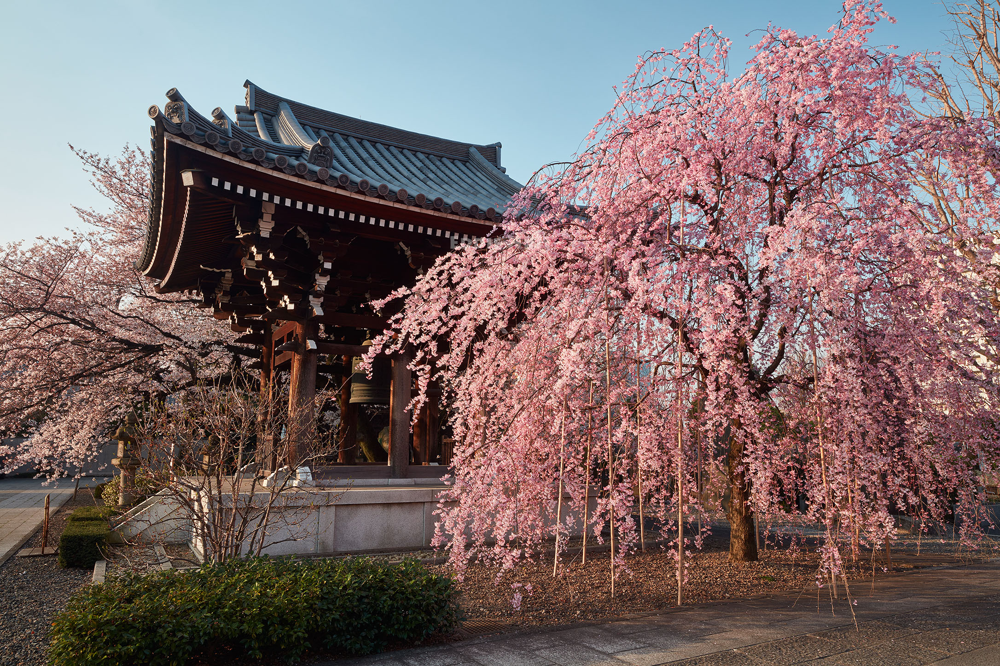
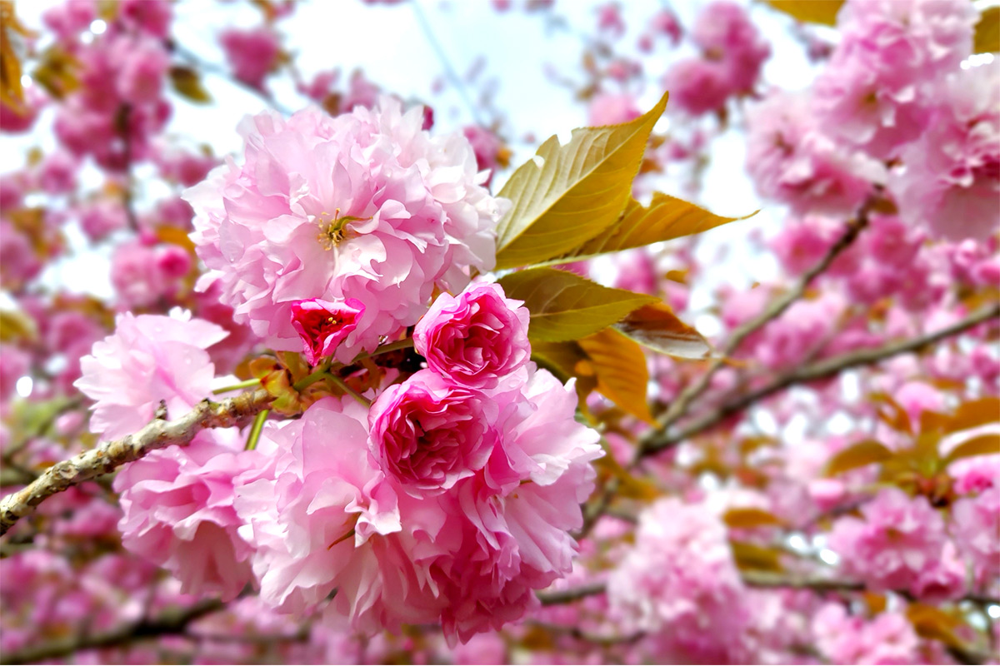
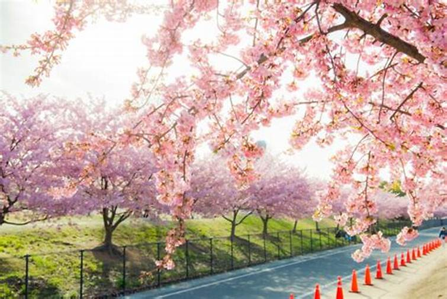

Algunas variedades destacadas

Somei Yoshino
La variedad más común y apreciada por su color blanco rosado.

Shidarezakura
Conocida como el cerezo llorón por sus ramas caídas.

Yaezakura
Flores densas y de múltiples capas, de un rosa más intenso.

Kawazuzakura
Florece temprano, a finales del invierno, con tonos fuertes.